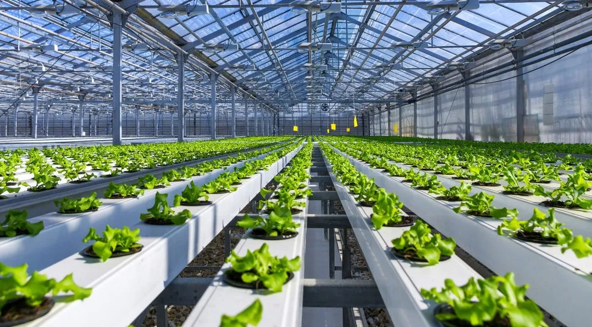

WORLD HEALTH DAY
Introduction:
7th of April is celebrated as the World Health Day which also marks the anniversary of World Health Organisation (WHO):
a department of United Nations. Every year WHO focuses on a specific public health concern during which various health care organizations – both national and international come forward and strive towards various health concerns that grip the globe.
Key messages of Word Health Organization in 2024
- Health For All envisions a society in which all people have good health and may live happy lives in a peaceful, wealthy, and sustainable environment.
- The right to health is a fundamental human right. Everyone must have access to health care when and when they need it, without financial burden.
- Thirty percent of the world's population lacks access to basic health treatments.
- Almost two hundred crore people are facing catastrophic or impoverishing health-care costs, with considerable disparities impacting those in the most disadvantaged circumstances.
- Universal health coverage (UHC) provides financial security and access to high-quality necessary services, lifts people out of poverty, promotes family and community well-being, safeguards against public health emergencies.
- To make health for all a reality, we need: individuals and communities with access to high-quality health services, so they can care for their own and their families' health; skilled health workers who provide quality, people-centric care; and policymakers who are committed to investing in universal health coverage.
World Health Day 2024: Significance
World Health Day is observed to educate people, spread awareness about health issues, new medicines, research and ensure healthcare facilities are accessible to everyone, everywhere. This day reminds people to take notice of their health and make improvements to lead a quality life. World Health Day marks an occasion for the organisation to discuss global health each year. This day is an opportunity for WHO to draw everyone’s attention toward their well-being.
#images HERE

WORLD HYGIENE DAY
World Hand Hygiene Day is marked every year on 5 May, to raise awareness of the importance of handwashing to prevent the spread of infections.
National Hand Hygiene Initiative
Healthcare workers
- Always clean your hands at the point of care.
- Make sure you know how to clean your hands and why hand hygiene is important .
Infection prevention and control practitioners
- Be a champion and mentor for clean hands at the point of care.
- Support your organisation's hand hygiene program.
Health service organisation managers
- Ensure your organisation has an active hand hygiene program.
- Ensure hand hygiene supplies are available at every point of care.
Patients and families
- Help us to help you – please clean your hands too!
Everyone
- Make clean hands your habit – it protects us all.